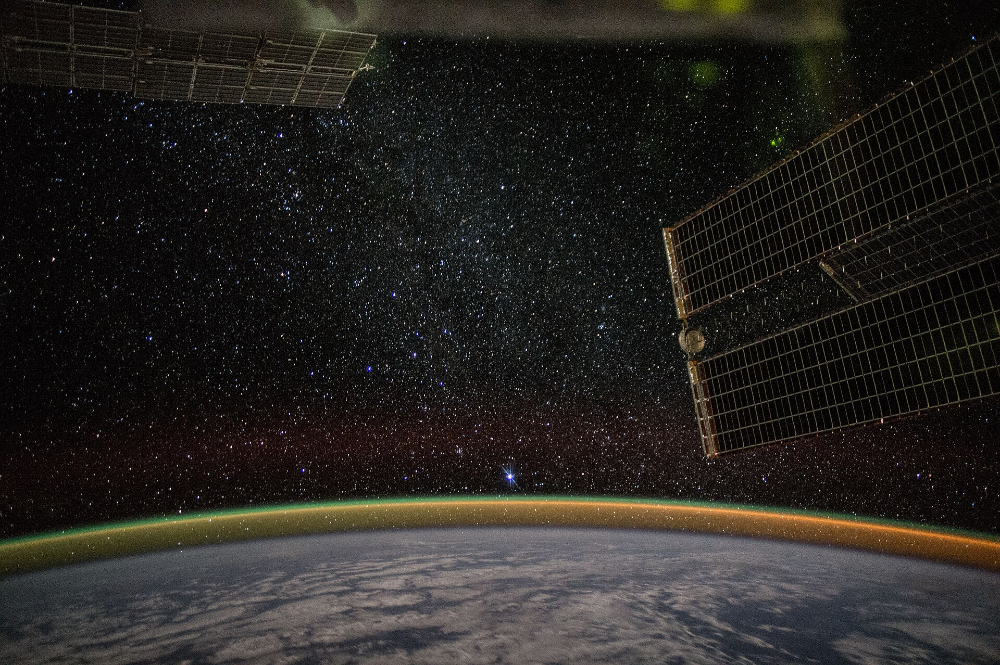

Clemson,to orbit.
Clemson Orbital is the student space program that grew out of Clemson CubeSat. We build spacecraft on campus, then fly them.
See our missions- Heritage
- Clemson CubeSat
- Based in
- Clemson, South Carolina
- Next mission
- In design
Clemson CubeSat showed that a small group of students could build flight hardware, test it honestly, and keep it running after launch. A mission keeps going after the spacecraft leaves the rocket, though: there are ground passes to schedule, data to clean up, researchers waiting on results, and a new class of students who'll inherit the next build.
So we picked a name that covers all of that. We still build satellites; we also plan larger missions, open our hardware to research, and speak up for aerospace in the Southeast.
How we work
- Reviewsopen to members and advisors
- Documentskept current
- Testingearly, and written down
- Lessonshanded to the next team
- Membersmostly undergraduates
- Majorsengineering, computing, sciences
- Space experiencenot required
- Partnersfaculty, companies, schools
What we do
- Small satellite missions
- A larger platform
- Ground stations
- Payload reviews
- Space research
- School visits
- Industry reviews
- Policy conversations
Missions, research and advocacy. "In development" means a plan, not a launch date.
How a mission runs
We don't start a phase until the last one has a written record. Members and outside advisors can sit in on any review.
On paper
On the bench
In orbit

Will your experiment fit?
Joining, a payload, a sponsorship or a school visit: write to all of us at once.
cubesat@